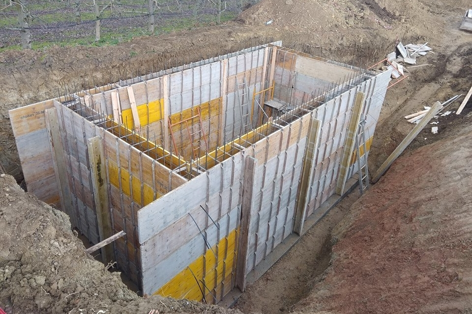

<!--<button class="btn btn-primary" data-toggle="modal" data-target="#myModal">
    Launch Modal
</button>-->

<!-- Sart Modal -->
<!--<div class="modal fade" id="myModal" tabindex="-1" role="dialog" aria-labelledby="myModalLabel" aria-hidden="true">
    <div class="modal-dialog">
        <div class="modal-content">
            <div class="modal-header justify-content-center">
                <button type="button" class="close" data-dismiss="modal" aria-hidden="true">
                    <i class="now-ui-icons ui-1_simple-remove"></i>
                </button>
                <h4 class="title title-up">Modal title</h4>
            </div>
            <div class="modal-body">
                
                <br>
                <br>
                <p>Descrição se for necessário
                </p>
            </div>-->
            <!--<div class="modal-footer">
            </div>-->
        <!--</div>
    </div>
</div>-->
<!--  End Modal -->